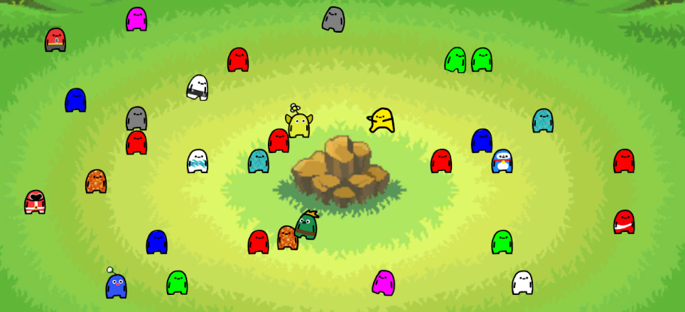

This started as a personal prototype, out of an interest in journaling and interactive design. The goal was a more engaging way to record daily experiences — turning journal entries into something visual and collectible. Once a day you create a moment: a small generated character standing in for that day's entry.
Each character works as both a memory marker and an interactive object. Open an entry to write freely, add reflections and upload an image, which turns each moment into a snapshot of the day. Everything is stored locally for now, since this is still a prototype focused on experimentation rather than long-term infrastructure.
Characters are generated as Common, Epic or Legendary, which adds a light collectible layer without making progression the point. At its core this is an experiment in blending game design with reflective journaling — seeing how interactivity and simple systems can make personal documentation more engaging. Future plans include a mobile version and more content.
itch.ioblogs: